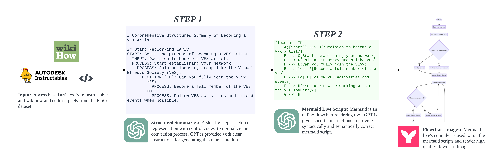

FlowVQA: Mapping Multimodal Logic in Visual Question Answering with Flowcharts
About
Current benchmarks for visual question answering fall short in evaluating crucial aspects like visual grounding and spatial reasoning skills. We introduce FlowVQA, a novel benchmark aimed at assessing the capabilities of visual question-answering multimodal language models in reasoning with flowcharts as visual contexts. This innovative benchmark brings together 2,272 carefully generated flowchart images and 22,413 question-answer pairs, challenging multimodal language models with tasks like information localization, decision-making, and logical progression. Our findings underscore the limitations of State-of-the-Art models across different categories in our dataset, highlighting the benchmark's crucial role in advancing multimodal question-answer modeling.
Dataset
We collect input texts from three primary sources: Wikihow articles, Instructables DIY blogs, and FloCo code snippets. WikiHow and Instructables provide detailed instructions for various tasks, while FloCo, a resource converting flowcharts to code, contains simple code samples. For each flowchart, we generate questions across 4 categories - Fact Retreival, Applied Scenraio, Flow Referential and Toplogical, to test different aspects of MLLMs.
Our final dataset includes 1,121 WikiHow articles, 701 Instructables blogs, and 450 FloCo flowcharts along with a total of 22,413 diverse question-answer pairs.

Flowchart Generation
Our core approach centers on converting any process-based workflow, regardless of its domain, into a flowchart for a detailed step-by-step representation. The conversion from source articles to flowchart Mermaid Scripts involves a two-step process. Initially, GPT-4 generates a structured representation with functional control tags from the source text, transforming it into a tagged textual representation suitable for Mermaid flowchart scripts. In the second step, we use this output to create a top-down Mermaid.js flowchart script, mapping steps to node types with control tags. The resulting scripts are compiled into high-resolution PNG images.
Question Generation

Our Q/A creation process encompasses four distinct question types: Fact Retrieval, Applied Scenario, Flow Referential, and Topological Q/A. Fact Retrieval involves extracting factual information from flowchart nodes, Applied Scenario tests practical application skills, Flow Referential focuses on specific sub-graphs, and Topological Q/A explores the larger flowchart structure. To generate high-quality Q/A pairs, we query GPT-4 using tagged textual representation, Mermaid.js script, and text-only few-shot examples. Topological Q/A pairs are produced by parsing the Mermaid script and creating adjacnecy matrices from them. The questions are template based and quantitative answers are extracted using networkx. We ensure evaluation consistency by generating three paraphrased gold answers for each question type, accommodating syntactic and semantic variations.
Example
Examples from our dataset can be viewed here.
Experimental Results

We perform evaluation on 3 different strategies: Zero Shot, Zero Shot with Chain-of-thought prompting and Few Shot Chain-of-thought prompting with Reasong Directives. The last strategy is our novel approach for decomposing the flowchart for better QA performance. We have fine-tuned (FT) the Qwen-VL Chat model as well.
FlowVQA poses a considerable challenge for models, evident in evaluations highlighting opportunities for improvement. The leading strategy, GPT-4 with Few-shot directive-based prompting, achieves a notable 68.42% Majority Voting score. Few-Shot Directives prove effective, showing a considerable improvement in most models. Fine-tuning Qwen-VL-chat with Zero-Shot and Zero-Shot CoT strategies results in a 3% and 11% improvement, respectively, underscoring the importance of fine-tuning for addressing flowchart understanding limitations in original pretraining. The fine-tuned model surpasses all existing open-source models, emphasizing FlowVQA's potential in introducing visual logic and reasoning to MLLMs.
People
Citation
This is a code block following a header.
This is a code block following a header.